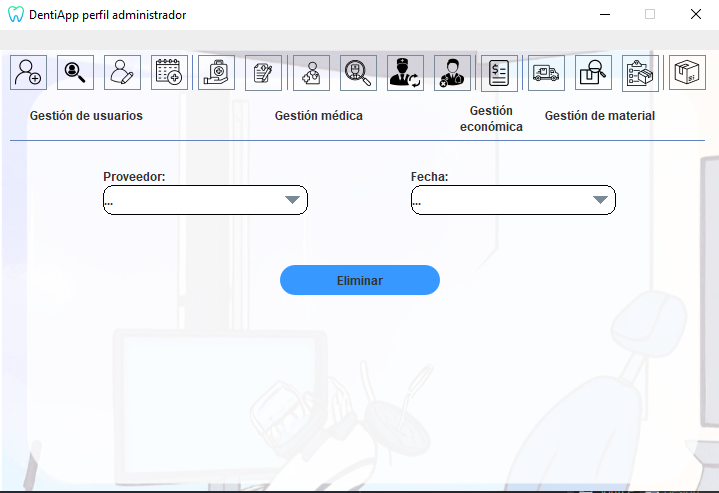

Ayuda: Modificar pedido
Los siguientes pasos le guiarán a través del proceso de modificación
de un pedido de material:
- Añadir proveedor: Desde la pantalla,
busque el proveedor del pedido del que desea hacer la modificacion utilizando el campo de búsqueda provisto.
- Especificar fecha: Después de especificar el proveedor,
especifique la fecha que
del pedido a modificar.
- Modificar pedido: Una vez que haya agregado el proveedor
deseado y
la fecha, haga clic en el botón "Eliminar" para eliminar el pedido especificado.

Si tiene alguna pregunta o necesita ayuda adicional,
no dude en comunicarse con nosotros.